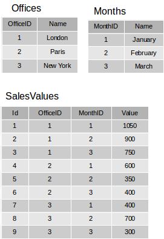
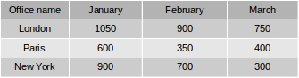
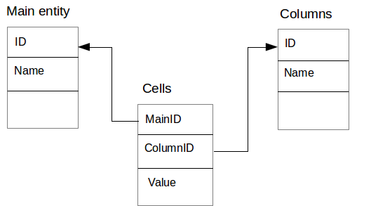

7.7.4. ModelGrid
ModelGrid model widget is a powerful widget to display and enter data, which is presented in a tabular form and as a tree.
ModelGrid widget is the most powerful UI component.
Note
At the current version of the platfom you can create and setup an instance of
ModelGrid only using visual editor.
ModelGrid component has the following features:
-
Entity's data representation as a columns and rows.
-
Data cells editing, inserting new and deleting rows.
-
Fixed non-scrollable rows and/or columns.
-
Service column with the cursor pointer.
-
Entity's data scrolling and cursor positioning.
-
Expandable dynamic columns.
-
Tree view of hierarchical data.
ModelGrid widget has the following specific properties:
| Property | Layout | JS | Description |
|---|---|---|---|
border |
• | The component's border. | |
fixedColumns |
• | • | The number of the fixed grid columns. |
fixedRows |
• | • | The number of the fixed grid rows. |
gridColor |
• | • | The Color of the grid. |
oddRowsColor |
• | • | The Color of the grid's odd rows. |
rowsHeaderType |
• | • | The service column's type. |
rowsHeight |
• | • | The height of the grid's rows. |
showHorizontalLines |
• | • | true to show horizontal lines and false otherwise. |
showVerticalLines |
• | • | true to show vertical lines and false otherwise. |
showOddRowsInOtherColor |
• | • | true to show odd rows in the different color and false otherwise. |
deletable |
• | • | true to enable rows delete operation for the grid and false otherwise. |
editable |
• | • | true to enable cells edit operation for the grid and false otherwise. |
insertable |
• | • | true to enable rows insert operation for the grid and false otherwise. |
entity |
• | The bounded model entity for the grid. | |
param2GetChildren |
• | See tree option. | |
paramSourceField |
• | See tree option. | |
unaryLinkField |
• | See tree option. | |
cells |
• | All grid cells as an array. | |
selectedCells |
• | All selected grid cells as an array. | |
columns |
• | Grid columns as an array. |
To configure
ModelGrid properties:
-
To select the model entity for the component use the entity property under the Model binding propetries group. To delete the binding, clear the entity field.
-
Use the fixedColumns and fixedRows properties in the Apperance properties group to freeze the required number of columns on the left and/or rows on the top of the grid.
-
Configure the rowsHeaderType property to define appearance of the rows header. It has the following options: None — the service column is not displayed, Usual — the service column is displayed with the cursor icon, Check box — a check box control, which allows you to select multiple rows, Radio button — to show a radio button control, which allows you to select only one row of the grid.
-
Use the
onRenderevent handler, which will be called for each data grid cell, if a similar handler was not defined for their columns.
ModelGridColumn has the following properties:
| Property | Layout | JS | Description |
|---|---|---|---|
enabled |
• | true if the column is enabled and false otherwise. |
|
fixed |
• | true if the column is fixed and false otherwise. |
|
readonly |
• | • | true the column is in a read-only mode and false otherwise. |
selectOnly |
• | true the column is in a select-only mode and false otherwise. |
|
title |
• | • | The column's title string. |
expandable |
• | See expandable option. | |
visible |
• | • | true the column is visible and false otherwise. |
width |
• | • | The column's width in pixels. |
background |
• | The header style background color. | |
font |
• | The header style font. | |
field |
• | Model entity's field bound to this column. | |
columnsEntity |
• | See expandable option. | |
columnsDisplayField |
• | See expandable option. | |
cellsEntity |
• | See expandable option. | |
cellsValueField |
• | See expandable option. | |
cellsColumnKeyField |
• | See expandable option. | |
rowsKeyField |
• | See expandable option. | |
substitute |
• | See expandable option. |
ModelGrid has ability to change it's cells' display style and to select values using custom editors while editing cells. In order to use these features, define
onRender and
onSelect event handlers in particular columns. If
onRender event handler is defined on a column, it will be ivoked rather than similar event handler, defined on
ModelGrid. Refer to
Model Widgets section to read about how to deal with
onRender and
onSelect event handlers.
Use the form inspector: the inspector displays the grid's columns node as children of
ModelGrid component node and allows you to edit them.
To add, remove and configure grid columns:
-
To fill all
ModelGridcolumns corresponding to the fields of the linked data model entity, select Fill columns — in this case, link to the entity fields will be performed automatically. -
To manually add a column to
ModelGriddrag it from the components palette or add it using → → context menu item in form inspector. -
To add a column as a child to another column use parent column's node → → context menu item in form inspector.
-
Move the selected columns up and down using the , or context menu items or by draggining it by mouse.
In standard mode a column represents entity's field data. To configure the column in standard mode:
-
Specify the bound entity's field, to which the column should be linked. To do this, use the field property and select a field from the bound entity.
-
Define a widget, which will be used for displaying in the column cells. Select its type from the view context menu of the column's node in the inpector. The choices will be compatible with the type of the linked entity field. Set the properties of the corresponding widget (see the corresponding sections for the description of the model widget setting procedure).
In expanded mode, a column can contain an arbitrary number of child columns. Their combination can be changed dynamically at runtime.

Figure 7.2. Expandable columns data tables

Figure 7.3. Expandable column result grid
The combination of dynamic children columns is determined by a special column entity in the data model. Values for the child column cells are determined by another cell entity, the objects of which also contain references to objects in the main entity (grid's rows source) and to the column entity objects.

Figure 7.4. Expandable column entities
Use the following
ModelGridColumn propeties to configure an expandable column:
| Property | Description |
|---|---|
expandable |
true if the column is in a expanded mode and false otherwise. |
substitute |
true to hide the parent column and false otherwise. |
columnsEntity |
Columns entity representing data to form columns. |
columnsDisplayField |
The field in Columns entity for dynamic columns titles. |
cellsEntity |
Cells entity. |
cellValueField |
The value field in Cells entity. |
cellColumnKeyField |
The field in Cells entity refering to the primary key in Columns entity. |
cellRowKeyField |
The field in Cells entity refering to the primary key in Main entity. |
The widget can be configured to display a tree structure in the first column on the left (next to the service column). Other columns in this grid are displayed as usual.
To show a tree we need an entity, which contains a field referring to some other field, thus forming a hierarchical data structure.

Figure 7.5. Hierarchical data dataset
A tree structure in the grid can function in two modes:
-
The simple mode, in which all tree levels are loaded by a single query.
-
The lazy mode, in which each level is loaded as the nodes are expanded.
Note
The simple tree operation mode is acceptable only for small sets of data, since in this mode all tree elements are requested simultaneously and it can lead to the performance problems and slow user interface. For large data sets, use the lazy tree operation mode.
To configure a tree in the simple mode:
-
Specify a value for the
unaryLinkFieldproperty. For this property select the link source field, which is responsible for hierarchical relationships, in the example figure above it is theParentIDfield. To remove the selection, clear the property.
Important
The link source field should be in the same data set as configured as the grid's rows source.
To use a lazy tree grid, create an entity based on a query, which returns child elements by the parent identifier passed as a parameter, for example:
/** * @name LazyTree */ SELECT * FROM tree_table t WHERE t.PARENT_ID = :parentId OR (:parentId IS NULL AND t.PARENT_ID IS NULL)
To configure lazy tree for
ModelGrid:
-
Specify
unaryLinkFieldproperty. For this property select the link source field, which is responsible for hierarchical relationships, in the example figure above it is theParentIDfield. -
Set
param2GetChildrenproperty. Select the entity's parameter that is responsible for fetching child records. In the code snippet above this corresponds to:parentIdparameter. -
Set
paramSourceFieldproperty. Select the field that will be used as a source for the parameter to get child records. The field's value will provided to the parameter specified byparam2GetChildrenproperty. In the example above this property should be set toIDprimary key field.